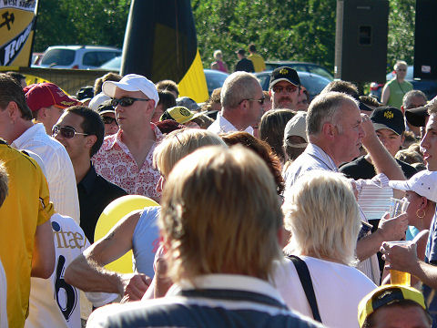
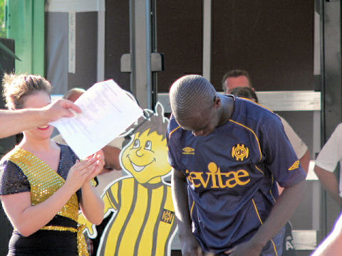
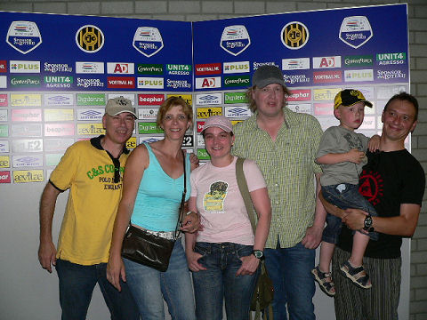
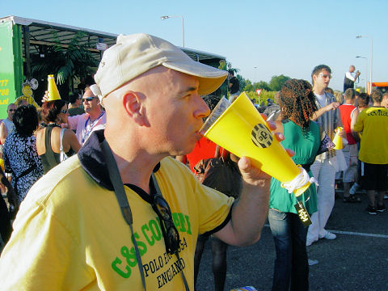

|
De Open Dag van 2007 was een zeer hete!
Interessante tattoo!
Roda is pure passie.
De Brazilliaanse winnaars van het jeugdtoernooi swingen er op los.
Ja knul, je ziet het goed...
Huub Narinx casual.
Marc is een beetje verliefd op Monique.
Standje van VI...
Pink shoes, pink shirt, pink cap, kortom
Danniëlle.

Het was niet zo druk als verleden jaar.
Standje 7 bleek een illusie maar Izzie was de enige van de praatjesmakers die
nadrukkelijk aanwezig was.
Het publiek wordt lekker gemaakt voor een verrassing.
De spanning groeit.
Ingo houdt het niet meer...
Plots, witte rook uit het PLS...
... de brandweer rukt uit....
... om een eind te maken aan alle vuurhaardjes over transferperikelen.
De brandweermannen blijken spelers te zijn.
Charmante dames helpen de spelers uit hun pak. Hier Madulier.
Tyton. 
Het excentrieke kapsel van nieuweling Lamah.
En daar is dan de langverwachte spits: Jeanvion Yulu-Matondo.
Het jachtseizoen op spelers-handtekeningen is geopend.

Z16 harde kern ;-)
De prijsuitreiking van de voorspellingscompetitie werd deze keer geleid door Ger
Senden.
It's a dirty job but somebody has got to do it...
Er werden toeters uitgedeeld door de spelers.

Hier wordt gedemonstreerd hoe de toeters gebruikt dienen te worden.

Afbieren in de Herjot met Harry, het broertje van
Pierre Vermeulen.
© Koempels Pleasure Dome
|